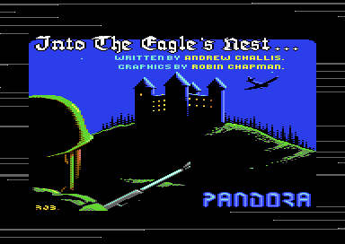
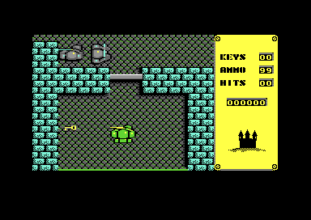

<meta charset="utf-8">
<meta name="viewport" content="width=device-width, initial-scale=1">
<title>Into the Eagle's Nest</title>
<link rel="preconnect" href="https://fonts.googleapis.com">
<link rel="stylesheet" href="https://fonts.googleapis.com/css2?family=Lato:wght@400;700;900&family=IBM+Plex+Mono:wght@400;500&display=swap">
<style>
:root{
  --bg:#23262d; --paper:#e9e7e1; --surface:#ffffff; --surface-2:#f1efea; --line:#d5d3cc; --line-soft:#e0ded8;
  --ink:#2f3136; --ink-soft:#55585f; --ink-mute:#80838a;
  --link:#1f5fa8; --link-hover:#154480; --accent:#1f5fa8;
  --amber:#c25a00; --cyan:#1f5fa8; --coral:#d04a3a; --green:#2a8a4a; --violet:#4a5bd6; --hl:#fff0c2;
  --chip:#2f3136; --chip-ink:#ffffff;
  --c64blue:#40318d; --c64grey:#686868;
  --fd:'Lato',system-ui,sans-serif; --fb:'Lato',system-ui,sans-serif; --fm:'IBM Plex Mono',ui-monospace,Menlo,monospace;
  --col:1080px; --gx:68px; --fs:17px; --lh:1.6; --hw:900; --h1:46px; --h2:26px; --sy:48px; --pp:26px; --r:10px;
  --plate-shadow:0 1px 2px rgba(0,0,0,.05),0 4px 14px rgba(0,0,0,.05);
}
*{box-sizing:border-box}
html{background:var(--bg);min-height:100%}
body{background:var(--paper);color:var(--ink);font-family:var(--fb);font-size:var(--fs);line-height:var(--lh);max-width:var(--col);margin:0 auto;min-height:100vh;padding:0 0 4rem}
h1,h2,h3{font-weight:var(--hw);letter-spacing:-.01em;text-wrap:balance;color:var(--ink);margin:0}
.wrap{padding:0 var(--gx)}
.hero{padding:48px var(--gx) 8px;text-align:left}
.eyebrow{font-family:var(--fm);font-size:12px;letter-spacing:.08em;text-transform:uppercase;color:var(--ink-mute);margin:0 0 10px}
.hero h1{font-size:var(--h1);line-height:1.15;letter-spacing:-.02em;margin:0 0 14px}
.hero .sub{margin:0 0 .6em;color:var(--ink-soft)}
section{padding:var(--sy) 0 24px}
section:last-of-type{border-bottom:none}
.fig{font-family:var(--fm);font-size:12px;letter-spacing:.08em;text-transform:uppercase;color:var(--ink-mute);margin:0 0 10px}
h2.t{font-size:var(--h2);margin-bottom:12px}
.lede{color:var(--ink-soft);margin:0 0 30px}
.plate{background:var(--surface);border:1px solid var(--line);border-radius:var(--r);padding:var(--pp);box-shadow:var(--plate-shadow)}
.cap{font-size:14px;color:var(--ink-mute);margin-top:14px;line-height:1.55}
.cap b{color:var(--ink);font-weight:700}
code{font-family:var(--fm);font-size:.82em;background:var(--chip);color:var(--chip-ink);border-radius:4px;padding:2px 6px;white-space:nowrap}

.en-row{display:flex;gap:18px;flex-wrap:wrap;align-items:flex-start}
.en-row > figure{margin:0;flex:1 1 300px}
.en-row img{width:100%;height:auto;image-rendering:pixelated;border:1px solid var(--line);border-radius:6px;display:block}
.en-row figcaption{font-size:14px;color:var(--ink-mute);margin-top:8px}
.en-btn{font-family:var(--fm);font-size:13px;background:var(--surface-2);border:1px solid var(--line);border-radius:6px;padding:6px 11px;cursor:pointer;color:var(--ink)}
.en-btn[aria-pressed="true"]{background:var(--chip);color:var(--chip-ink);border-color:var(--chip)}
.en-bar{display:flex;gap:8px;flex-wrap:wrap;margin-bottom:14px;align-items:center}
.en-key{font-family:var(--fm);font-size:12px;letter-spacing:.06em;text-transform:uppercase;color:var(--ink-mute);margin-right:4px}
.en-cv{image-rendering:pixelated;display:block;max-width:100%;height:auto;background:#000;border-radius:6px}
.en-grid{display:grid;grid-template-columns:repeat(auto-fill,minmax(150px,1fr));gap:10px}
.en-cell{background:var(--surface-2);border:1px solid var(--line-soft);border-radius:6px;padding:8px;font-size:13px}
.en-cell b{display:block;font-family:var(--fm);font-size:12px;color:var(--ink-mute);font-weight:500}
table.en-tab{border-collapse:collapse;width:100%;font-size:14px}
table.en-tab th,table.en-tab td{border-bottom:1px solid var(--line-soft);padding:6px 10px;text-align:left}
table.en-tab th{font-family:var(--fm);font-size:12px;letter-spacing:.06em;text-transform:uppercase;color:var(--ink-mute);font-weight:500}
.en-note{font-size:14px;color:var(--ink-soft);margin-top:10px}
</style>
<!-- tabs -->
<header class="hero">
  <p class="eyebrow">1987 · Pandora</p>
  <h1>Into the Eagle's Nest</h1>
  <p class="sub">A castle of four floors, 16 kilobytes of map each, built from a kilobyte of description and a table of blocks. The guards never fire a shot, and the high score screen hides a cheat.</p>
</header>
<main class="wrap">

<section>
  <p class="fig">01 · The game</p>
  <h2 class="t">What the game sends you in to do</h2>
  <p class="lede">A top-down shooter from 1987, written for the Commodore 64 by Andrew Challis with graphics by Robin Chapman.</p>
  <div class="plate">
    <div class="en-row">
      <figure><figcaption>The title picture, loaded from tape before the game itself and shown while the rest of the tape reads in.</figcaption></figure>
      <figure><figcaption>The first room of a mission. The player is the green figure; the panel on the right counts the keys, the rounds and the hits he has taken.</figcaption></figure>
    </div>
  </div>
  <p>You play a soldier who has smuggled himself into a Nazi fortress. Three prisoners are held inside it, and explosive charges have already been planted on each of its four floors. The joystick walks you from room to room, fire shoots in the direction you are walking, and a lift moves you between the floors.</p>
  <p>Before each mission the game asks which one you want. Three of them fetch a prisoner out; the fourth sets off the charges and brings the castle down. Along the way there are paintings, vases, pendants and jewels to pick up, keys for the steel doors, boxes of ammunition and food and first aid for the hits you take.</p>
</section>

<section>
  <p class="fig">02 · Music</p>
  <h2 class="t">Music: three streams of note numbers</h2>
  <p class="lede">The attract loop's tune, played here by the game's own driver.</p>
  <div class="plate">
    <div id="en-sid"></div>
    <p class="cap">The driver at <code>$1947</code>, ported to JavaScript and fed the game's own tables from the listing. It plays through the site's model of the SID. <b>Checked</b> against the game's code run on the kit's 6502 simulator, every register after every call for 2,000 calls (<code>test_music.js</code>).</p>
  </div>
  <p>The C64 makes its sound with a chip called the SID, which has three voices, and a short piece of code called a driver tells it what to play. The game calls its driver once a frame, and this one acts on every third call: on a PAL machine, the European one that draws 50 frames a second, that is about 16.7 times a second. Each of the three voices has a stream of note numbers of its own, kept at the addresses <code>$15E2</code>, <code>$1680</code> and <code>$1768</code> (written in hexadecimal, base 16, as every address on this machine is), and a counter saying how many ticks of the current note are left. When a counter runs out, the voice takes the next number from its stream and looks it up in three tables: the frequency's high byte at <code>$17F8</code>, its low byte at <code>$1842</code>, and the note's length at <code>$188C</code>.</p>
  <p>A note number of <code>$FF</code> ends the tune, and the driver then starts all three streams again from the beginning, so the music never stops. The test for it reads voice one's number whichever voice is being served, so it is voice one that decides when the tune goes round.</p>
  <p>Each voice keeps its waveform in a three-byte table at <code>$1930</code>: a pulse for voices one and three and a sawtooth for voice two. To start a note the driver writes that byte with bit 0 cleared, which closes the gate, and then writes it again, which opens it.</p>
</section>

<section>
  <p class="fig">03 · One frame</p>
  <h2 class="t">The screen, rebuilt from memory</h2>
  <p class="lede">Not a screenshot. This is the play screen drawn from the bytes in the listing, the way the video chip would read them.</p>
  <div class="plate">
    <canvas id="en-frame" class="en-cv" width="384" height="272"></canvas>
    <p class="cap">One frame of play recorded in VICE: the video chip's registers as the frame began and every write to them afterwards, with the memory the drawing reads. <b>All 104,448 pixels match</b> the emulator's own picture of the same frame.</p>
  </div>
  <p>The picture is drawn twice in one frame. Everything on the screen is made of characters, as on a typewriter, and the shapes those characters take come from a character set the game supplies. This game has two. The set at <code>$2000</code> holds the castle's walls and floors, and the set at <code>$2800</code> holds the letters the message line at the bottom is written in.</p>
  <p>The video chip can point at only one set at a time, so the game moves the pointer part way down the screen. It does that with an interrupt: a routine the chip starts itself when the beam drawing the picture reaches a line the game has named. In the recorded frame the set changes on line 228, just below the play area, and multicolour is turned off there for the message line.</p>
  <p>The play area itself mixes two modes, chosen cell by cell from each cell's colour: the walls are drawn in hires and the floors in multicolour. The <a href="graphics.html">Graphics</a> tab takes the screen apart that way, with both character sets and the sprites.</p>
</section>

<section>
  <p class="fig">04 · The castle</p>
  <h2 class="t">A floor is stored as one byte for each block of its map</h2>
  <p class="lede">A floor of the castle is 128 tiles across and 128 down, 16 kilobytes of map. The tape stores it as one byte for every block of four tiles by four: a kilobyte.</p>
  <div class="plate">
    <div class="en-bar" id="en-block-bar"><span class="en-key">Block</span></div>
    <div class="en-row">
      <figure style="flex:0 0 auto"><canvas id="en-block" class="en-cv" width="128" height="128"></canvas><figcaption id="en-block-cap">One block, four tiles by four.</figcaption></figure>
      <figure><canvas id="en-floor" class="en-cv" width="1024" height="1024" style="width:100%;max-width:512px"></canvas><figcaption>The basement, built from its description. Each block above is one byte of it.</figcaption></figure>
    </div>
    <p class="cap">Drawn from the listing: the description at <code>$D000</code>, the blocks at <code>$7000</code>, the tiles at <code>$2000</code> and their colours at <code>$8600</code>. <a href="levels.html">All four floors are on the Maps / levels tab, at full size.</a></p>
  </div>
  <p>The description is 32 rows of 32 bytes, and every byte names one of the blocks kept at <code>$7000</code>. A block is sixteen bytes: four tiles across and four down. The builder at <code>$6A4B</code> works through the description, copies each block's sixteen tiles into the map at <code>$9000</code>, and so turns a kilobyte into sixteen.</p>
  <p>The map is too big to live anywhere the video chip can see it, so the game keeps it at <code>$9000</code> and draws the 28 tiles by 21 the screen shows from it, one row at a time. The descriptions themselves are stored under the input and output chips at <code>$D000</code>, in the memory the C64 keeps there behind them, and the builder switches the chips out of the way to read them.</p>
  <p>Some bytes of a description mean more than a block. <code>$30</code> to <code>$37</code> are guards, a pair of bytes for each of the four directions a guard can start out walking, and every one found is added to a list of figures.</p>
</section>

<section>
  <p class="fig">05 · The player and the guards</p>
  <h2 class="t">The player is in the map as well as in front of it</h2>
  <p class="lede">He is drawn with sprites, and also stamped into the map as a tile, for the length of one interrupt.</p>
  <div class="plate">
    <div class="en-bar" id="en-stamp-bar"><span class="en-key">Show</span></div>
    <figure style="margin:0"><canvas id="en-stamp" class="en-cv" width="384" height="384"></canvas><figcaption id="en-stamp-cap">The tiles round the player, as the map holds them.</figcaption></figure>
    <p class="cap">The sixteen tiles the player's square covers, before and after <code>$5B1B</code> stamps tile <code>$55</code> over them. The grid is read from the map at <code>$9000</code> by <code>$5C55</code>.</p>
  </div>
  <p>The player is drawn with four sprites, two across and two down. A sprite is a small picture the video chip draws wherever the program puts it, over the top of everything else, and the C64 has eight of them. The four are placed round a position kept in <code>$02DF</code> and <code>$02E0</code>, and his twelve poses are on the <a href="graphics.html">Graphics</a> tab. He moves 8 pixels, one tile, every four frames, and a move is allowed only when the four tiles he would cover all have a code below <code>$2D</code>. Everything from <code>$2D</code> up is a wall, a door, furniture, a guard or something to pick up.</p>
  <p>The guards are not sprites. They are drawn into the map as tiles, like the walls, and they move by the same rule: the four tiles ahead must be empty. That leaves the game with a problem, because a sprite is not in the map and a guard checking the tiles ahead would walk straight through the player.</p>
  <p>The answer is <code>$5B1B</code>. Before the guards take their turn it writes tile <code>$55</code> over the sixteen tiles the player covers, keeping what was there in four small buffers; after they have moved, it puts the sixteen tiles back. A guard that finds <code>$55</code> ahead of it has found the player, and that is the only way the player is ever hurt.</p>
  <p>There is no shooting from the guards at all. <code>$639F</code> is the one routine that adds to the hit count, and its four callers are the four branches of the guards' movement where the tile ahead holds the stamp. The manual says the soldiers shoot and do great damage; in this version they walk into you, one hit at a time, and fifty hits end the mission.</p>
</section>

<section>
  <p class="fig">06 · Controls</p>
  <h2 class="t">One joystick and one key</h2>
  <div class="plate">
    <table class="en-tab">
      <tr><th>Control</th><th>What it does</th><th>Where</th></tr>
      <tr><td>Joystick, port 2</td><td>Walks one tile every four frames. The direction is also the direction a shot goes.</td><td><code>$4297</code></td></tr>
      <tr><td>Fire</td><td>Shoots, and spends one round. Two shots can be in the air at once, the second once the first has taken eight steps of 8 pixels.</td><td><code>$45BD</code>, <code>$463F</code></td></tr>
      <tr><td>SPACE</td><td>Pauses, and pauses again to carry on. The message line reads <code>...PAUSING...</code>.</td><td><code>$5FCB</code>, <code>$4899</code></td></tr>
      <tr><td>RESTORE</td><td>Abandons the game and returns to the attract loop.</td><td><code>$8031</code></td></tr>
    </table>
    <p class="cap">Every one of these was tried in the emulator from a snapshot of play, one input at a time.</p>
  </div>
  <p>The game does not use the KERNAL's keyboard scan. Its own interrupt never passes control to the system's handler, so the keyboard is never read for it, and the pause key is read by hand: <code>$5FCB</code> drives one row of the keyboard matrix and reads one column, which is SPACE, and leaves the answer in <code>$C5</code>. That is the byte the KERNAL itself uses for the last key it saw, borrowed for a single key.</p>
</section>

<section>
  <p class="fig">07 · Sound</p>
  <h2 class="t">Sound: nine effects on one voice</h2>
  <p class="lede">Every noise the game makes in play, as the game plays it.</p>
  <div class="plate">
    <div id="en-sfx"></div>
    <p class="cap">The effects at <code>$6404</code> and the footsteps at <code>$6790</code>, ported and run through the site's model of the SID. Each effect sets its own attack, decay, pulse width, frequency and waveform on voice one, and a length in frames.</p>
  </div>
  <p>A routine that wants a noise leaves its number in <code>$02D5</code>, and the sound's own frame at <code>$63E6</code> starts it. Finding something, a key, a treasure or a lift pass, is 1, and so is arming a detonator. A shot that hits something useless is 2, a shot at a locked door 3, healing 4 and firing 5. Unlocking a door with a key is 6, and the explosives in a chest going off 7. A guard killed is 8, and so is the object worth 2500 that <code>$67FD</code> breaks; a shot that opens a door or hits a pickup is 9. The footsteps are separate, on voice two, and alternate between two pitches as the player's walking frame flips.</p>
  <p>Voice three has another job. When a game starts, <code>$67CA</code> sets it to noise at the highest frequency, reads its own oscillator 256 times into a table at <code>$8700</code>, and silences it again. That table is the game's dice: the chip's noise generator, read once a game and kept, and the chests are the only thing that ever throws them (<a href="discoveries.html">Discoveries</a>).</p>
</section>

<section>
  <p class="fig">08 · The loader</p>
  <h2 class="t">The tape loader does all its reading in an interrupt</h2>
  <p class="lede">Interceptor Micros' "WILD SAVE", signed by Andrew Challis, the game's own programmer. The processor waits in a loop of one instruction while every pulse off the tape interrupts it.</p>
  <div class="plate">
    <canvas id="en-tape" class="en-cv" width="960" height="56" style="width:100%;cursor:pointer;background:#16171b"></canvas>
    <p class="en-note" id="en-tape-cap"></p>
    <table class="en-tab" id="en-tape-tab" style="margin-top:10px">
      <tr><th>Tape time</th><th>Block</th><th>Bytes</th><th>What it is</th></tr>
    </table>
    <p class="cap">Every block on the tape, read from the tape image by the loader's own rules. All sixteen checksums are good, and 49,728 of the 49,729 bytes that reach RAM are what memory holds when the game starts; the other is changed by the game before then. Point at the tape or a row for what each block is.</p>
  </div>
  <p>The KERNAL, the machine's own system, loads the first file in its own format: half a minute of tape that brings the turbo loader with it. The loader switches the KERNAL out, points the interrupt vector at its own code at <code>$0100</code>, and leaves the processor in <code>JMP $02E8</code>. Every pulse from the tape interrupts it. The handler reads CIA 1's timer and restarts it: a pulse longer than about 480 cycles of the processor's clock is a 1 and a shorter one a 0, and on this tape they are about 390 and 580. The border is dark grey only while the handler runs, which is what draws the loading stripes.</p>
  <p>A block starts with five bytes, its last address, its length and a flag, and its data comes in from that address downwards, each byte XORed with the low byte of the address it goes to. A checksum closes it, and a wrong one turns the border into a cycle of colours that never stops. A flag of 0 writes with the input and output chips switched out, which is how the four floors reach the memory behind them at <code>$D000</code>.</p>
  <p>Some of the blocks are a single byte, and they land in the video chip and CIA 2: that is how the title picture is switched on, with no code for it at all (<a href="discoveries.html">Discoveries</a>). The last block is 89 bytes over the loader's own set-up, written while the processor waits in it; it keeps <code>JMP $02E8</code> at the same address, so the waiting loop never notices, and it is what the end of the tape jumps into.</p>
</section>

</main>
<script src="../../lib/cpu6502.js"></script>
<script src="../../lib/c64.js"></script>
<script src="../../lib/sid.js"></script>
<script>
/* en-driver */
// The music driver at $1947, ported. D.stream[v] is each voice's stream of note numbers ($15E2,
// $1680, $1768), D.hi, D.lo and D.len the three note tables ($17F8, $1842, $188C), and D.wave the
// three waveform bytes ($1930). The driver is called once a frame and acts on every third one.
function createDriver(D) {
  const sid = new Uint8Array(25);
  const OFFSET = [0, 7, 14];
  let tick = 0, left = [1, 1, 1], pos = [0, 0, 0], note = [0, 0, 0], hi = [0, 0, 0], lo = [0, 0, 0];
  let writes = [], on = true;
  const w = (r, v) => { sid[r] = v; writes.push(r, v); };
  function restart() { left = [1, 1, 1]; pos = [0, 0, 0]; }
  return {
    sid,
    get writes() { return writes; },
    init() {
      sid.fill(0); writes = []; on = true; tick = 0;
      for (let r = 0; r < 25; r++) { w(r, 8); w(r, 0); }
      w(0x05, 0x70); w(0x0C, 0x75); w(0x13, 0x00);          // attack and decay, the three voices
      w(0x06, 0x90); w(0x0D, 0x00); w(0x14, 0x60);          // sustain and release
      w(0x03, 0x08); w(0x0A, 0x05); w(0x11, 0x0B);          // pulse widths
      left = [1, 1, 1]; pos = [0, 0, 0];
      w(0x18, 0x0F);
    },
    stop() { writes = []; on = false; for (const o of OFFSET) w(o + 4, 0); },
    playing() { return on; },
    play() {
      writes = [];
      if (!on) return;
      if (tick !== 2) { tick++; return; }
      tick = 0;
      // $19FB sets the counters to 1 and jumps back to the top of the tick rather than returning,
      // so the tune's first notes are taken in the same call the end mark was found in. Four
      // rounds is the guard: a stream whose first number were $FF would hold the game here too.
      for (let round = 0; round < 4; round++) {
        let again = false;
        for (let v = 0; v < 3; v++) {
          const o = OFFSET[v];
          left[v] = (left[v] - 1) & 0xFF;
          if (left[v] !== 0) continue;
          note[v] = D.stream[v][pos[v] & 0xFF] & 0xFF;
          // The end test reads voice one's number whichever voice is being served, as the game does.
          if (note[0] === 0xFF) { restart(); again = true; break; }
          const n = note[v];
          hi[v] = D.hi[n] & 0xFF; lo[v] = D.lo[n] & 0xFF; left[v] = D.len[n] & 0xFF;
          w(o + 4, D.wave[v] & 0xFE);
          if (hi[v] === 0xFF) { w(o + 0, 0); w(o + 1, 0); }
          else { w(o + 0, lo[v]); w(o + 1, hi[v]); w(o + 4, D.wave[v]); }
          pos[v] = (pos[v] + 1) & 0xFF;
        }
        if (!again) break;
      }
    },
    voice(v) { return { stream: pos[v], note: note[v], ticks: left[v] }; },
  };
}
// end of en-driver
</script>
<script>
/* en-sfx-driver */
// The game's own sound effects, run on the kit's 6502. D.mem is the pieces of the game the sound
// needs, from the listing: its variables in page 2 and the code and tables at $6000. init(t) runs
// the game's set-up at $63B7 and then asks for effect t + 1 the way the game does, by leaving its
// number in $02D5, or for a footstep by setting the walking flag at $02D8. play() runs the game's
// own sound frame at $63E6, once, and keeps every write to the chip in order.
function createSfx(D, C64Cpu) {
  const base = new Uint8Array(0x10000);
  for (const [at, bytes] of D.mem) base.set(bytes, at);
  const sid = new Uint8Array(25);
  let m = base.slice(), cpu = null, writes = [], want = 0, live = true;
  const io = {
    // Voice three's own noise output, which the set-up reads 256 times for the game's table of
    // random numbers and which one of the effects reads every frame. D.noise pins it, for the test.
    read(ad) { return ad === 0xD41B ? (D.noise === undefined ? (Math.random() * 256) | 0 : D.noise) : m[ad]; },
    write(ad, val) {
      if (ad >= 0xD400 && ad < 0xD800) { const r = ad & 0x1F; if (r < 25) { sid[r] = val; writes.push(r, val); } return; }
      m[ad] = val;
    },
  };
  const regs = { a: 0, x: 0, y: 0, n: 0, v: 0, d: 0, z: 0, c: 0 };
  const call = (at) => cpu.call(at, Object.assign({}, regs), { maxSteps: 400000 });
  return {
    sid,
    get writes() { return writes; },
    init(t) {
      m = base.slice(); cpu = new C64Cpu.CPU(m, { port: 0x36, io });
      sid.fill(0); writes = []; live = true; want = t + 1;
      call(0x63B7);                                   // the game's own sound set-up
      // $63B7 builds the game's table of random numbers at $8700 out of the chip's noise, which is
      // why one of the effects sounds different each time. D.random pins it, for the test.
      if (D.random) m.set(D.random, 0x8700);
      writes = [];
      if (want === 10) m[0x02D8] = 1; else m[0x02D5] = want;
    },
    stop() { writes = []; live = false; m[0x02D5] = 0; m[0x02D6] = 0; m[0x02D8] = 0; io.write(0xD404, 0); io.write(0xD40B, 0); },
    playing() { return live; },
    play() { writes = []; if (live && cpu) call(0x63E6); },
    voice(v) { return v === 0 ? { effect: m[0x02D6], frames: m[0x02D7] } : {}; },
  };
}
// end of en-sfx-driver
</script>
<script>
/* en-frame */
// One frame of play recorded in VICE with kit/c64/frame.py (capture, then trim): every write to the
// video chip with its line and cycle, and the memory the drawing reads, for C64.drawFrame.
const EN_FRAME = {"schema":1,"standard":"PAL","lines":312,"cycles":63,"about":"","vic":[120,158,144,158,120,179,144,179,15,15,30,168,18,189,42,189,224,27,0,209,0,255,208,0,25,122,241,0,15,0,0,239,240,240,251,252,243,240,245,247,247,247,247,247,240,240,240],"cia2":[151,63],"cpu":[47,54],"writes":[[228,46,53272,27],[228,56,53270,196],[253,6,53272,25],[253,12,53270,208]],"colour":"AAAAAAAAAAAAAAAAAAAAAAAAAAAAAAAAAAAAAAAAAAAAAAAAAAAAAAANDQ0LCwwNCwsMDQ0NDQ0NDQ0NDQ0NDQ0NDQ0NBwcHBwcHBwcHBwAAAwMDAw0NDQ0LCwsNDQ0NDQ0NDQ0NDQ0NDQ0NDQ8HBwcHBwcHBwcAAAMDAwMNDQ0NDw8LCA0NDQ0NDQ0NDQ0NDQ0NDQ0PBwcHBwcHDw8PAAADAwMDDQ0NDQsPCw0LDw8LDQ0NDQ0NDQ0NDQ0NDwcHBwcHBwcHDwAAAwMDAw0NDQ0LCw0NCw8LCw0NDQ0NDQ0NDQ0NDQ8HBwcHBwcPDw8AAAMDAwMDAwMDAwMDAwoKDA0JAwMDAwMDAwMDAwMPBwcHBwcHBwcPAAADAwMDAwMDAwMDAwMJCQkJCQMDAwMDAwMDAwMDDwcHBwcHBw8PDwAAAwMDAwMDAwMDAwMDDg4ODgkDAwMDAwMDAwMDAw8HBwcHBwcHBw8AAAMDAwMDAwMDAwMDAw0NDQ0JAwMDAwMDAwMDAwMPBwcHBwcHBwcPAAADAwMDCAgICAgICAoNDQ0NCQgICAgICAkDAwMDDwcPDw8PDw8HBwAAAwMDAw0NDQ0NDQ0NDQ0NDQ0NDQ0NDQ0JAwMDAw8HBwcHBwcHDwcAAAMDAwMNDQ0NDQ0NDQ0NDQ0NDQ0NDQ0NCQMDAwMPBwcHBwcHBwcHAAADAwMDDQ0NDQ0NDQ0NDQ0NDQ0NDQ0NDQkDAwMDDwcHBwcHBwcHBwAAAwMDAw0NDQ0NDQ0NDQ0NDQ0NDQ0NDQ0JAwMDAw8HBwcHBwcHBwcAAAMDAwMNDw8NDQ0NDQ0NDQ0NDQ0NDQ0NCQMDAwMPBwcHBwcHBwcHAAADAwMDDQ0NDQ0NDQ0NDQ0NDQ0NDQ0NDQkDAwMDDwcHBwcHBwcHBwAAAwMDAw0NDQ0NDQ0NDQ0NDQ0NDQ0NDQ0JAwMDAw8HBwcHBwcHBwcAAAMDAwMNDQ0NDQ0NDQ0NDQ0NDQ0NDQ0NCQMDAwMPBwcHBwcHBwcHAAADAwMDDQ0NDQ0NDQ0NDQ0NDQ0NDQ0NDQkDAwMDDwcHBwcHBwcHBwAAAwMDAw0NDQ0NDQ0NDQ0NDQ0NDQ0NDQ0JAwMDAw8HBwcHBwcHBwcAAAMDAwMNDQ0NDQ0NDQ0NDQ0NDQ0NDQ0NDQMDAwMHDw8PDw8PDw8HAAAAAAAAAAAAAAAAAAAAAAAAAAAAAAAAAAAAAAAAAAAAAAAAAAAAAAAICAgICAgICAgICAgICAgICAgICAgICAgICAgICAgICAgICAgICAgIBwcHBwcHBwcHBwcHBwcHBwcHBwcHBwcHBwcHBwcHBwcHBwcHBwcHBwAAAAAAAAAAAAAAAAAAAAAAAAAAAAAAAA==","ram":[{"a":1024,"b":"7+/v7+/v7+/v7+/v7+/v7+/v7+/v7+/v7+/v7+/v7+/v7+/v7+/v7+8AAACMjb4/jI2+PwAAAAAAAAAAAAAAAAAAAAAADAsLCwsLCwsLDe/vQkFCQQAAAACGh44/AAAAAAAAAAAAAAAAAAAAAAkLCwsLCwsLCwvv70FCQUIAAAAAiImueT8/Pz8AAAAAAAAAAAAAAAAJCwsLCwsLCgp17+9CQUJBAAAAAIqLkD97fH1+AAAAAAAAAAAAAAAACS4vdC0LC/DwCe/vQUJBQgAAAACMjT8/goOEhQAAAAAAAAAAAAAAAAkLCwsLCwsKCnXv70JBQkFCQUJBQkFCQbm6vj8EQUJBQkFCQUJBQkEJASQkJQsL+fkJ7+9BQkFCQUJBQkFCQUJFRUVFRUJBQkFCQUJBQkFCCQsLCwsLCwoKde/vQkFCQUJBQkFCQUJBRkZGRgZBQkFCQUJBQkFCQQkmJywtCwvw8Anv70FCQUJBQkFCQUJBQgAAAAAEQkFCQUJBQkFCQUIJCwsLCwsLCwsL7+9CQUJBBQUFBQUFBQIAAAAABwUFBQUFBQZCQUJBCQsKCgoKCgp1C+/vQUJBQgAAAAAAAAAAAAAAAAAAAAAAAAAEQUJBQgkL8PDw8PDwCQvv70JBQkEAAAAAAAAAAAAAAAAAAAAAAAAABEJBQkEJCwsLCwsLCwsL7+9BQkFCAAAAAAAAAAAAAAAAAAAAAAAAAARBQkFCCQsLCwsLCwsLC+/vQkFCQQAAAAAAAAAAAAAAAAAAAAAAAAAEQkFCQQkLCwsLCwsLCwvv70FCQUIAEBEAAAAAAAAAAAAAAAAAAAAABEFCQUIJCwsLCwsLCwsL7+9CQUJBAAAAAAAAAAAAAAAAAAAAAAAAAARCQUJBCQsLCwsLCwsLC+/vQUJBQgAAAAAAAAAAAAAAAAAAAAAAAAAEQUJBQgkLCwsLCwsLCwvv70JBQkEAAAAAAAAAAAAAAAAAAAAAAAAABEJBQkEJCwsLCwsLCwsL7+9BQkFCAAAAAAAAAAAAAAAAAAAAAAAAAARBQkFCCQsLCwsLCwsLC+/vQkFCQQAAAAAAAAAAAAAAAAAAAAAAAAAEQkFCQQkLCwsLCwsLCwvv70FCQULk5OTk5OTk5OTk5OTk5OTk5OTk5UFCQUIOCgoKCgoKCgoP7+/v7+/v7+/v7+/v7+/v7+/v7+/v7+/v7+/v7+/v7+/v7+/v7+/v7++AgICAgICAgICAgICAgICAgICAgICAgICAgICAgICAgICAgICAgICAgICAgICAgICAgICAgICAgICAgICAgICAgICAgICAgICAgICAgICAgA=="},{"a":2040,"b":"wMHCw+/w8fI="},{"a":8192,"b":"FxUVxHFRUUyDERERARER/wEFEUUVUVFE"},{"a":8224,"b":"EAAQQFBAUEAAAABEEVFRRAAAAEAQQFBAEAAQRFFRUUQ="},{"a":8264,"b":"f79/v3+/f7////////9Vqv//////////Dz9hTFbaTKHw/IYya1szh2HMWtZMYT8KhzNbazKGfKAVAP+q0NFRBLndzc3dOUFE"},{"a":8480,"b":"OREBAREREf+TERERERGT/xEREQERERH/x8fHx8fHx/8="},{"a":8544,"b":"AUXHx8fHx/+RCQeDwSET/xETFx8XExH/ER0fEx8dEf8="},{"a":8696,"b":"FxUVxHFRUUw="},{"a":8712,"b":"APz+vG681KgAP18vXS5VKg=="},{"a":8744,"b":"lf+qqqqqVQAAAABEEVFRRA=="},{"a":9120,"b":"ERERg8fHx/////////8/vw=="},{"a":9160,"b":"FhUVBCEREUg="},{"a":9176,"b":"AQUaGxsaGhUFFlpaWloaGlGlubmpqampFVGl5OSkpFQ="},{"a":9232,"b":"GQYBQABBUUEWhVVkGUBVqaVUUQr/AAAAFGXkEfsAAAAVFRVARRsbGhUVFQRBkZSZFRAFGhoaGhpWAVCk6empqRoaGhYFEBUbqamllFABRYYbGgUAQFFRRJmUUQQRUVFEFhUVxNHR0VQ="},{"a":9344,"b":"wMHVhBHFQUQ="},{"a":9584,"b":"mZqW1dXV1MA="},{"a":9672,"b":"ERAURFFRUURpVABEUVFRRA=="},{"a":9712,"b":"ARUVhGFRUUg="},{"a":10016,"b":"FxUVxHFR//8QABDAdFT//w=="},{"a":10104,"b":"AAAAAAAAAAAAPGZmZmY8AA=="},{"a":10184,"b":"ADxmZj4GPAA="},{"a":11264,"b":"AAAAAAAAAAA="},{"a":12153,"b":"AAAAAAAAAA=="},{"a":12288,"b":"AAAAAAAAAAAAAAAAAAAAAAAAAAAAAAAAAAAAAAAAAAAAAAAAAAAAAAAAAKqqAFWqAAFVAAbXAB/fAH1/AH9/"},{"a":12352,"b":"AAAAAAAAAAAAAAAAAAAAAAAAAAAAAAAAAAAAAAAAAAAABQAAH0AAf9AAV9AAndAAflAA35AA9eQA/X0A7f0A"},{"a":12416,"b":"AHt/AHt/AH9/AH9/AH9/AB9/AAVfAAFVAAefAAffAAffAAffAAFVAAAAAAAAAAAAAAAAAAAAAAAAAAAAAAAA"},{"a":12480,"b":"7e0A/e0A/f0A/f0A/f0A/fQA9VAAVUAA55AA99AA99AA99AAVUAAAAAAAAAAAAAAAAAAAAAAAAAAAAAAAAAA"},{"a":15296,"b":"/XQA/XQA/XQA9HQA0HQAQHQAAPQAqqgAVVAAAAAAAAAAAAAAAAAAAAAAAAAAAAAAAAAAAAAAAAAAAAAAAAAA"},{"a":15360,"b":"AAAAAAAAAAAAAAAAAAAAAAAAAAAAABAAEBAIEDgIODgcOHwcfHw+fP4+/nx/fHw+XHw6XHw6f/++f//+f//+"},{"a":15424,"b":"AAP/AAP/AAP/AAP/AAP/AAP/AAP/AAP/AAP/AH6qB9VVqqqqFUBUAoCgAAAAAAAAAAAAAAAAAAAAAAAAAAAA"},{"a":15488,"b":"/8AA/8AA/8AA/8AA/8AA/8AA/8AA/8AA/8AAqqgAVVUAqqqoABQUAAAAAAAAAAAAAAAAAAAAAAAAAAAAAAAA"},{"a":16383,"b":"AA=="}],"capture":{"phase_cycles_uncertain":0,"frame_cycles":19657,"frame_ended_on_line":0,"picture_lines_low":0,"writes_account_for_end_state":true,"ram_bytes_changed_during_frame":32,"colour_cells_changed_during_frame":0}};
// The tape's blocks, read from the tape image by the loader's own rules (work/tapedecode.py): where each
// starts and ends in seconds of tape, its addresses, its length and its flag.
const EN_TAPE = {"kernal_until":29.88,"end":239.66,"blocks":[{"first":828,"last":1019,"length":192,"flag":1,"checksum":"good","from":29.88,"to":30.66,"chips":false},{"first":40960,"last":48959,"length":8000,"flag":1,"checksum":"good","from":30.66,"to":61.83,"chips":false},{"first":35840,"last":36839,"length":1000,"flag":1,"checksum":"good","from":61.83,"to":65.82,"chips":false},{"first":53265,"last":53265,"length":1,"flag":1,"checksum":"good","from":65.82,"to":65.84,"chips":true},{"first":55296,"last":56295,"length":1000,"flag":1,"checksum":"good","from":65.84,"to":69.76,"chips":true},{"first":56576,"last":56576,"length":1,"flag":1,"checksum":"good","from":69.76,"to":69.79,"chips":true},{"first":53272,"last":53272,"length":1,"flag":1,"checksum":"good","from":69.79,"to":69.81,"chips":true},{"first":53270,"last":53270,"length":1,"flag":1,"checksum":"good","from":69.81,"to":69.84,"chips":true},{"first":53265,"last":53265,"length":1,"flag":1,"checksum":"good","from":69.84,"to":69.86,"chips":true},{"first":2048,"last":24575,"length":22528,"flag":1,"checksum":"good","from":69.86,"to":157.74,"chips":false},{"flag":255,"note":"the loader goes back to searching","from":157.76,"to":162.1},{"first":28672,"last":33023,"length":4352,"flag":1,"checksum":"good","from":162.1,"to":179.08,"chips":false},{"first":53248,"last":57343,"length":4096,"flag":0,"checksum":"good","from":179.08,"to":195.06,"chips":false},{"first":34304,"last":34559,"length":256,"flag":1,"checksum":"good","from":195.06,"to":196.09,"chips":false},{"first":57344,"last":62463,"length":5120,"flag":1,"checksum":"good","from":196.09,"to":216.16,"chips":false},{"flag":255,"note":"the loader goes back to searching","from":216.17,"to":220.32},{"first":24576,"last":28671,"length":4096,"flag":1,"checksum":"good","from":220.32,"to":236.28,"chips":false},{"first":679,"last":767,"length":89,"flag":1,"checksum":"good","from":236.28,"to":236.65,"chips":false},{"flag":254,"note":"end of the load","from":236.65,"to":236.67}]};
// end of en-frame
</script>
<script>
/* en-page */
'use strict';
const $ = (id) => document.getElementById(id);
const hex = (n, w) => '$' + n.toString(16).toUpperCase().padStart(w || 2, '0');
function pressed(box, b) { box.querySelectorAll('button').forEach((x) => x.setAttribute('aria-pressed', String(x === b))); }

// One tile of the play character set, drawn the way the screen draws it: the cell's colour comes from
// the tile colour table at $8600, and with multicolour on a colour of 8 or more makes the cell
// multicolour ($D021 black, $D022 dark grey, $D023 grey and the colour less 8), below 8 hires.
function drawTile(ctx, m, code, px, py, s) {
  const c = m.ram[0x8600 + code] & 15, set = m.ram.subarray(0x2000, 0x2800);
  ctx.fillStyle = C64.PAL[0]; ctx.fillRect(px, py, 8 * s, 8 * s);
  if (c >= 8) C64.drawGlyphMC(ctx, set, code, px, py, s, [C64.PAL[0], C64.PAL[11], C64.PAL[12], C64.PAL[c & 7]]);
  else C64.drawGlyph(ctx, set, code, px, py, s, C64.PAL[c]);
}

// ---- 02 the music, and 07 the effects
function sound(m) {
  // Each table is read with a byte index, so the page takes the 256 bytes the game could reach
  // from each base, as `lda $15E2,y` does.
  const win = (a) => Array.from(m.ram.subarray(a, a + 256));
  const data = { stream: [win(0x15E2), win(0x1680), win(0x1768)],
                 hi: win(0x17F8), lo: win(0x1842), len: win(0x188C),
                 wave: Array.from(m.ram.subarray(0x1930, 0x1933)) };
  C64Sid.mount($('en-sid'), {
    driver: createDriver, data, tunes: ['The attract tune'], filter: '6581',
    rows: [
      { k: 'Note number', f: (v) => (v.note === undefined ? '-' : String(v.note)) },
      { k: 'Ticks left', f: (v) => String(v.ticks) },
      { k: 'Stream position', f: (v) => String(v.stream) },
    ],
  });
  // The effects run the game's own code, so they get the pieces of the game that code reads: the
  // variables in page 2 and everything from $6000 to $67FF, which is the sound itself.
  const mem = [[0x0200, Array.from(m.ram.subarray(0x0200, 0x0300))],
               [0x6000, Array.from(m.ram.subarray(0x6000, 0x6800))]];
  C64Sid.mount($('en-sfx'), {
    driver: createSfx, data: { mem },
    tunes: ['1 found', '2 a wasted shot', '3 a locked door', '4 healed', '5 firing',
            '6 a door unlocked', '7 explosives', '8 a guard killed', '9 shot open', 'Footsteps'],
    filter: '6581', bounce: false,
    rows: [{ k: 'Effect', f: (v) => (v.effect ? String(v.effect) : '-') },
           { k: 'Frames left', f: (v) => (v.frames === undefined ? '-' : String(v.frames)) }],
  });
}

// ---- 04 the castle
function castle(m) {
  const bcv = $('en-block'), bctx = bcv.getContext('2d');
  const fcv = $('en-floor'), fctx = fcv.getContext('2d');
  const bar = $('en-block-bar'), cap = $('en-block-cap');
  // Every block the basement's description names, most used first.
  const used = new Map();
  for (let i = 0; i < 1024; i++) { const b = m.ram[0xD000 + i]; used.set(b, (used.get(b) || 0) + 1); }
  const blocks = [...used.entries()].sort((a, b) => b[1] - a[1]).slice(0, 12).map(([b]) => b);
  function showBlock(b) {
    bctx.fillStyle = '#000'; bctx.fillRect(0, 0, bcv.width, bcv.height);
    for (let r = 0; r < 4; r++)
      for (let c = 0; c < 4; c++)
        drawTile(bctx, m, m.ram[0x7000 + b * 16 + r * 4 + c], c * 32, r * 32, 4);
    cap.textContent = 'Block ' + hex(b) + ', the sixteen bytes at ' + hex(0x7000 + b * 16, 4)
      + '. The basement names it ' + used.get(b) + (used.get(b) === 1 ? ' time.' : ' times.');
  }
  blocks.forEach((b, i) => {
    const el = document.createElement('button');
    el.type = 'button'; el.className = 'en-btn'; el.textContent = hex(b);
    el.setAttribute('aria-pressed', String(i === 0));
    el.addEventListener('click', () => { pressed(bar, el); showBlock(b); });
    bar.appendChild(el);
  });
  showBlock(blocks[0]);
  // The whole basement, tile by tile, from its description, the way the builder at $6A4B expands it.
  for (let br = 0; br < 32; br++) for (let bc = 0; bc < 32; bc++) {
    const b = m.ram[0xD000 + br * 32 + bc];
    for (let r = 0; r < 4; r++) for (let c = 0; c < 4; c++)
      drawTile(fctx, m, m.ram[0x7000 + b * 16 + r * 4 + c], (bc * 4 + c) * 8, (br * 4 + r) * 8, 1);
  }
}

// ---- 05 the stamp
function stamp(m) {
  const cv = $('en-stamp'), ctx = cv.getContext('2d'), bar = $('en-stamp-bar'), cap = $('en-stamp-cap');
  // A patch of the basement with a doorway in it, as the map holds it.
  const AT = 0x9000 + 40 * 128 + 20;
  function show(stamped) {
    ctx.fillStyle = '#000'; ctx.fillRect(0, 0, cv.width, cv.height);
    for (let r = 0; r < 6; r++) {
      for (let c = 0; c < 6; c++) {
        let code = m.ram[AT + r * 128 + c];
        const inPlayer = stamped && r >= 1 && r <= 4 && c >= 1 && c <= 4;
        if (inPlayer) code = 0x55;
        drawTile(ctx, m, code, c * 64, r * 64, 8);
        if (inPlayer) { ctx.strokeStyle = '#d04a3a'; ctx.lineWidth = 2; ctx.strokeRect(c * 64 + 1, r * 64 + 1, 62, 62); }
      }
    }
    cap.textContent = stamped
      ? 'The same tiles with $55 stamped over the sixteen the player covers. A guard that finds $55 ahead of it has found him.'
      : 'Six tiles by six of the basement, as the map holds them, at ' + hex(AT, 4) + '.';
  }
  [['The map', false], ['With the player stamped in', true]].forEach(([label, on], i) => {
    const el = document.createElement('button');
    el.type = 'button'; el.className = 'en-btn'; el.textContent = label;
    el.setAttribute('aria-pressed', String(i === 0));
    el.addEventListener('click', () => { pressed(bar, el); show(on); });
    bar.appendChild(el);
  });
  show(false);
}

// ---- 08 the tape, block by block
(function tape() {
  const cv = $('en-tape'), ctx = cv.getContext('2d'), cap = $('en-tape-cap'), tab = $('en-tape-tab');
  const T = EN_TAPE, W = cv.width, x = (t) => t / T.end * W;
  const WHAT = { 0x033C: 'the loader\'s signature, into the cassette buffer', 0xA000: 'the title picture\'s bitmap',
    0x8C00: 'the title picture\'s screen colours', 0xD800: 'the title picture\'s colour RAM, into the chip',
    0x0800: 'the program', 0x7000: 'the blocks the floors are built from, and more of the program',
    0xD000: 'the four floors\' descriptions, under the input and output chips', 0x8600: 'the colour of each tile',
    0xE000: 'the plaque and the prisoner, under the KERNAL', 0x6000: 'more of the program',
    0x02A7: 'the loader\'s own set-up, replaced by the code that hands over to the game' };
  const REG = { 0xD011: 'the video chip\'s control register', 0xDD00: 'CIA 2\'s port A, the video bank',
    0xD018: 'the video chip\'s memory pointers', 0xD016: 'the video chip\'s second control register' };
  const rows = [{ from: 0, to: T.kernal_until, label: 'the first file', what: 'read by the KERNAL in its own format, with the turbo loader in it' }];
  T.blocks.forEach((b) => {
    if (b.first === undefined) rows.push({ from: b.from, to: b.to, label: b.flag === 0xFF ? 'flag $FF' : 'flag $FE',
      what: b.flag === 0xFF ? 'back to searching, across a new lead-in' : 'the end of the load' });
    else rows.push({ from: b.from, to: b.to, label: b.first === b.last ? hex(b.first, 4) : hex(b.first, 4) + '-' + hex(b.last, 4), bytes: b.length,
      what: (REG[b.first] ? 'one byte into ' + REG[b.first] : WHAT[b.first] || '') + (b.flag === 0 ? ' (flag 0)' : '') });
  });
  const colour = (r) => r.label.startsWith('flag') ? '#555a66' : r.from === 0 ? '#7a6a52' : r.bytes === 1 ? '#ff3b6b' : r.label.startsWith('$D0') ? '#3bd1ff' : r.label.startsWith('$A0') || r.label.startsWith('$8C') || r.label.startsWith('$D8') ? '#ffd23f' : '#56ac4d';
  let on = -1;
  function draw() {
    ctx.fillStyle = '#16171b'; ctx.fillRect(0, 0, W, cv.height);
    rows.forEach((r, i) => {
      ctx.fillStyle = colour(r); ctx.globalAlpha = on < 0 || on === i ? 1 : 0.45;
      ctx.fillRect(x(r.from), 10, Math.max(2, x(r.to) - x(r.from) - 1), 28);
    });
    ctx.globalAlpha = 1; ctx.fillStyle = '#c8cbd2'; ctx.font = '11px monospace';
    for (let t = 0; t <= T.end; t += 30) ctx.fillText(Math.round(t) + ' s', Math.min(x(t) + 2, W - 30), 52);
    const r = rows[on];
    cap.textContent = r ? r.from.toFixed(1) + ' to ' + r.to.toFixed(1) + ' seconds into the tape: ' + r.label + (r.bytes ? ', ' + r.bytes + (r.bytes === 1 ? ' byte, ' : ' bytes, ') : ', ') + r.what + '.'
      : 'The tape, ' + Math.round(T.end) + ' seconds of it. The title picture is on the screen from ' + T.blocks.find((b) => b.first === 0xD011 && b.from > 69).to.toFixed(0) + ' seconds.';
    tab.querySelectorAll('tr[data-i]').forEach((tr) => { tr.style.background = Number(tr.dataset.i) === on ? 'var(--hl)' : ''; });
  }
  rows.forEach((r, i) => {
    const tr = document.createElement('tr'); tr.dataset.i = String(i);
    tr.innerHTML = '<td>' + r.from.toFixed(1) + ' s</td><td><code>' + r.label + '</code></td><td>' + (r.bytes || '') + '</td><td>' + r.what + '</td>';
    tr.addEventListener('mouseenter', () => { on = i; draw(); });
    tab.appendChild(tr);
  });
  function point(ev) {
    const rc = cv.getBoundingClientRect(), t = (ev.clientX - rc.left) / rc.width * T.end;
    on = rows.findIndex((r) => t >= r.from && t < r.to); draw();
  }
  cv.addEventListener('mousemove', point); cv.addEventListener('click', point);
  cv.addEventListener('mouseleave', () => { on = -1; draw(); });
  draw();
})();

try { C64.drawFrame($('en-frame'), EN_FRAME, 1); } catch (e) { console.error('frame', e); }
C64.load('listing.json').then((m) => {
  sound(m); castle(m); stamp(m);
}).catch((e) => {
  for (const id of ['en-block-cap', 'en-stamp-cap']) {
    const el = $(id); if (el) el.textContent = 'The listing could not be loaded: ' + e.message;
  }
});
// end of en-page
</script>
